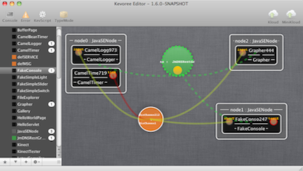
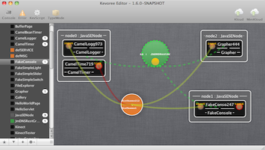

@KevoreeInject
ModelService modelService;
@KevoreeInject
Context context;
@KevoreeInject
KevScriptService kevScriptService;
@Override
public void run() {
try {
Log.info("i'm alone... kill myself...");
ModelCloner cloner = new DefaultModelCloner();
ContainerRoot clonedModel = cloner.clone(modelService.getCurrentModel().getModel());
kevScriptService.execute("remove " + context.getNodeName() + "." + context.getInstanceName(), clonedModel);
modelService.update(clonedModel, null);
} catch (Exception e) {
e.printStackTrace();
}
}
M@R: Adapt the model (the easiest way)
Create a KevScript:
- add node0.comp2 : ToyConsole
- Ask the kevScriptService of the platform to execute the script
KevoreeFramework, KevScript
- Scripting language to manipulate models
- Comments -> // this is a comment
- Namespace -> namespace space42
attach node0, node1 space42
- Repository -> repo org.sonatype.org/foo/bar?a=b&c=d
- Include -> include mvn:org.kevoree.library.java:org.kevoree.library.java.javaNode:3.0.0
- add -> add node0, node1 : JavaNode
add node0.comp0 : ToyConsole
KevoreeFramework, KevScript
- Scripting language to manipulate models
- remove -> remove node0
remove node0.comp0
- move -> move node0.comp0 node1
- set -> set node0.comp0.foo = "bar"
- bind/unbind -> (un)bind node0.base.output chan0
- (de)attach -> (de)attach node0 sync
- network -> network node0 192.168.0.1


 



{kind=link}
{kind=link}
{kind=link}
{kind=link}